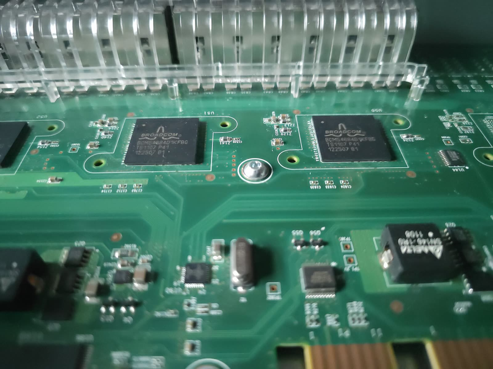

Homelab
Personal infrastructure, in progress
Why
To host everyday services myself, for free and in control of my own data, and later share them with my family. It is also my training ground: infrastructure, networking, cloud, defensive and offensive security. The aim is not to master everything, but to understand how the pieces fit together.
What is planned
A Proxmox hypervisor, an OPNsense firewall, four VLANs (LAN, LAB, DMZ, ADMIN) on a Cisco 2960 switch, a WireGuard VPN, monitoring with Prometheus and Grafana, a Wazuh SIEM and self-hosted services.
Where it stands
Phase 1 of 10 complete: the hardware. Next step, installing Proxmox.
Proxmox, OPNsense, Cisco IOS, WireGuard, Wazuh, Prometheus, Grafana, Docker
Documentation on GitHub